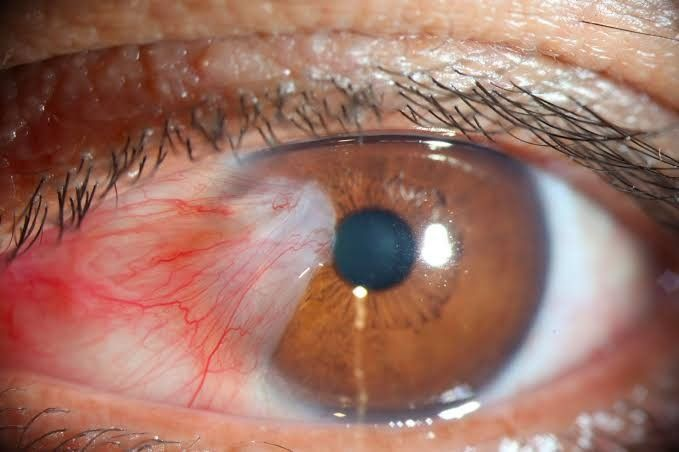

Apakah penglihatan turun perlahan tanpa disertai mata memerah?
Bagaimana Sistem Ini Bekerja?
Sistem ini membantu mengidentifikasi kemungkinan penyakit mata berdasarkan gejala awal menggunakan pendekatan forward chaining dari sistem pakar.
- Proses diagnosa cepat dan sistematis
- Berbasis aturan medis dan logika sistem pakar
- Mendukung keputusan awal sebelum ke dokter
- Antarmuka sederhana dan mudah digunakan
Contoh Hasil Diagnosa
Katarak
Penglihatan kabur perlahan, tanpa nyeri atau kemerahan.

Glaukoma
Penglihatan menyempit, tekanan bola mata tinggi.

Degenerasi Makula
Penglihatan sentral kabur, sering pada usia lanjut.
✔
Input Gejala
Pengguna memilih gejala yang dialami.
✔
Proses Diagnosa
Sistem memproses data berdasarkan aturan.
✔
Hasil Analisis
Menampilkan hasil diagnosa awal.
✔
Rekomendasi
Saran tindakan lanjutan bagi pengguna.
✔
Data Tersimpan
Riwayat diagnosa dapat disimpan.
✔
Berbasis AI
Dapat dikembangkan dengan AI / Fuzzy Logic.